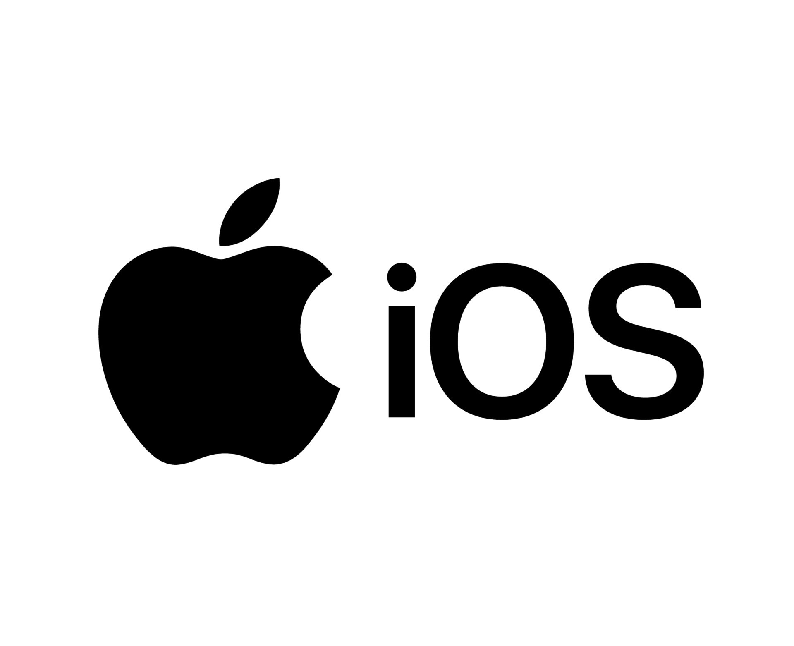
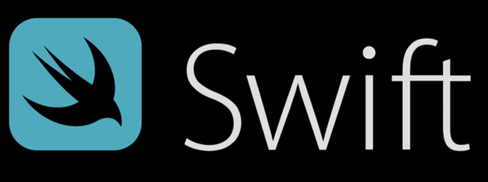

IOS Part

ios 부서는 swift 문법을 숙지하고, swift를 통해 코딩하는 법을 배웁니다.
안전성을 우선으로하는 프로그래밍을 배우고 고전게임을 만드는 것이 최종 목표입니다.
협업과 유지,보수를 용이하게 하기 위한 프로그래밍 습관 또한 배울 것 입니다.

스위프트란 Apple WWDC14에서 공개된 프로그래밍 언어로 IOS 프로그래밍을
하는데 쓰이는 언어입니다.
Object-C가 가지고 있는 단점을 보완하고 클로저, 다중 리턴 타입(튜플),
네임스페이스, 제네릭, 타입 인퍼런스 등
Objective-C에는 없었던 현대 프로그래밍 언어가 갖고 있는 기능을 많이
포함시켰으며, 이에 따라 일정한 성능 향상을 보이고 있습니다.
Curriculum

Vision
-
성장
-
혁신
-
정교함